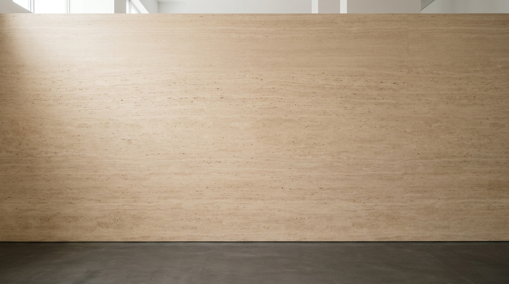

La matemática es la única memoria del cosmos que no miente. En el Atelier calculamos las variedades de la física teórica en silicio nativo para hacerlas descansar en piezas tangibles de colección: papel de algodón alemán de 308 g/m², paspartú biselado y molduras nobles elaboradas bajo estándares de archivo.

La matemática vive en el cálculo; la pieza de colección nace en la honestidad de sus materiales. No producimos impresiones comerciales de consumo efímero: cada cuadro está construido bajo estándares internacionales de conservación museística.
Fabricado con 100% fibra de algodón puro de 308 g/m². Libre de lignina y blanqueadores ópticos artificiales (OBA). Su superficie mate aterciopelada absorbe la luz de la habitación sin generar reflejos molestos, permitiendo contemplar el trazo desde cualquier ángulo.
Inyección giclée de archivo con micro-pigmentos minerales encapsulados en resina. A diferencia de las tintas de base agua convencionales que viran de color a los pocos años, este sistema cuenta con certificación de permanencia superior a un siglo sin decoloración.
Cartón de conservación libre de ácido de 5 centímetros de margen perimetral. Su corte a 45° revela un alma blanca impoluta que otorga aire a la composición y separa físicamente la lámina del cristal para evitar que la humedad ambiental dañe el soporte.
Confeccionadas en madera sólida seleccionada: Ébano Negro Mate Studio, Roble Claro Nórdico o Nogal Profundo. Cada unión a inglete se ajusta a mano sin grapas exteriores visibles, sellando el reverso con cinta de enmarcado libre de ácido contra el polvo.
Metacrilato óptico de alta pureza que bloquea el 99% de la radiación ultravioleta perjudicial. Ofrece máxima transparencia visual, reduce el peso de la pieza a la mitad y garantiza que el cuadro viaje seguro en transporte nacional sin riesgo de quebrar.
Cada obra se acompaña de su hoja de procedencia en papel verjurado con sello en seco en relieve, número de serie único de edición limitada y firma manuscrita de Matías Cortés Figueroa, vinculada a un hash criptográfico verificable.
Cuatro configuraciones físicas diseñadas para dialogar con diferentes tipologías de espacio y arquitectura interior.
Hahnemühle Photo Rag 308g con paspartú biselado libre de ácido de 5 cm, marco de madera noble maciza y acrílico UV99.
Bloque de metacrilato de 6 mm con pulido perimetral de diamante y bastidor trasero flotante de aluminio oculto para colgado sin marco.
Cerámica de 11 oz con acabado soft-touch satinado en negro azabache y serigrafía perimetral de la ecuación en oro o blanco.
Cuaderno Moleskine de tapa dura con grabado en bajorrelieve en portada, papel ahuesado marfil de 100g y cinta marcapáginas.
Desde los 7 Problemas del Milenio hasta la teoría del caos y la cimática sonora. Cada ecuación ha sido calculada en silicio nativo y tipografiada con rigor matemático.
La hipótesis más profunda de la matemática pura: el misterio de la distribución de todos los números primos a lo largo de la recta crítica.
El nacimiento del efecto mariposa en meteorología. Dos alas que jamás se cruzan, tejiendo una órbita infinita y aperiódica.
El violín acariciando una placa de latón: la vibración sonora expulsa la arena hacia las líneas de silencio, tejiendo mandalas exactos.
La turbulencia de los fluidos incompresibles: la frontera donde el orden laminar colapsa en vórtices auto-inducidos.
La esfera de cuatro dimensiones proyectada en tres dimensiones: círculos perfectos que llenan el espacio sin cortarse jamás.
Grigori Perelman demostró que cualquier variedad tridimensional cerrada puede alisarse geométricamente hasta converger en una esfera.
Sin falsas promesas ni ambigüedad. Te explicamos con exactitud los tiempos de taller y las garantías que protegen cada obra desde nuestro taller en Santiago hasta tu puerta.
Al tratarse de piezas de manufactura personalizada con moldura y paspartú cortados a medida, el encargo se formaliza mediante Webpay Plus, tarjetas bancarias o transferencia directa al momento de la orden.
La impresión giclée, el curado de los pigmentos en cámara, el biselado manual y el enmarcado artesanal requieren entre 10 y 15 días hábiles. Garantizamos la entrega final en un plazo máximo de 20 días hábiles.
Cada envío viaja protegido en caja de cartón tricapa de alta resistencia, esquineras de espuma de polietileno de alta densidad (EPE) y doble envoltura hidrófuga para asegurar que la pieza llegue impecable a cualquier región de Chile.
Elige cómo deseas experimentar el universo de Atelier Matemático:
Una galería arquitectónica con iluminación cenital de museo. Inspecciona el cuadro en 360°, cambia la madera noble de la moldura y formaliza tu pedido en línea con total transparencia.
Vuelo orbital inercial libre entre las 24 leyes científicas vivas calculadas en silicio. Tu dispositivo aporta cómputo voluntario a la red mientras cazas capturas fotográficas en tiempo real.
Manipula los diales de constantes físicas en tiempo real, graba videos verticales de 15s y 30s a 60 FPS o descarga archivos maestros en ultra alta definición a 300 DPI.